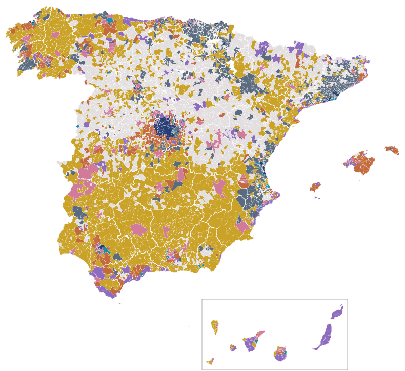
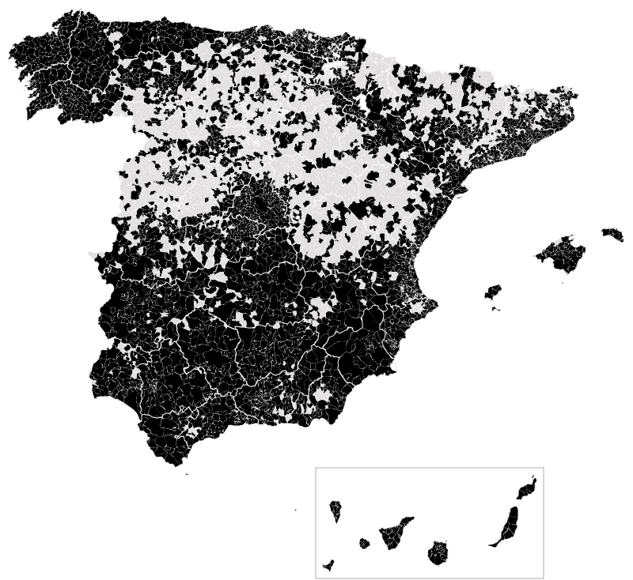
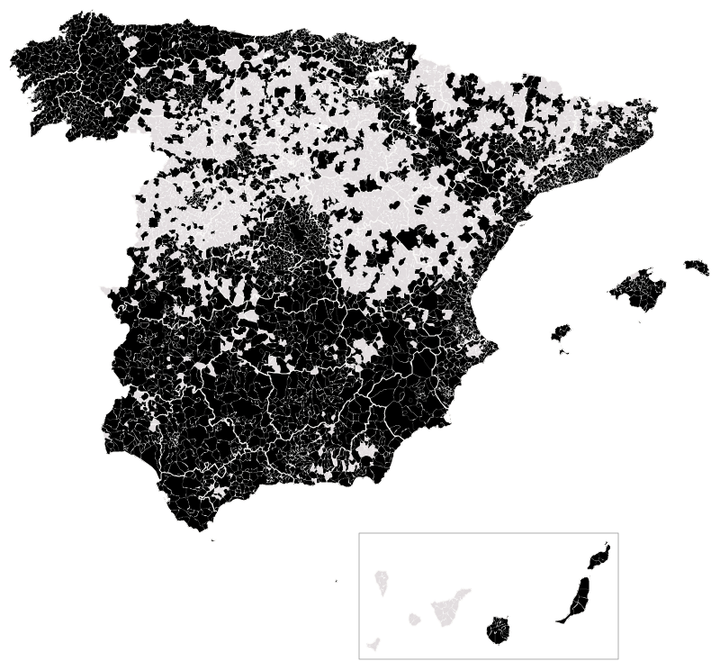

Actualidad · El despacho y la urna · España
Donde abundan los despachos, el PP saca siete puntos más y el PSOE, cinco menos
En los municipios de cada provincia con más abogados, asesores, consultores y financieros, el PP sacó en 2023 el 35,8% y el PSOE el 29%; donde menos hay, el 28,3% y el 34,2%. Es una de las huellas más firmes del mapa de los oficios. Donde más gente vive del comercio, Vox saca un tercio más. Y donde se vive del turismo, se vota menos.
Por Nacho G. del Álamo ·

Cada párrafo lleva una etiqueta: dato (cifra comprobable con las fuentes), patrón (relación que se repite, sin afirmar la causa), hipótesis (explicación posible, sin dos fuentes independientes) o contexto (hechos y declaraciones publicados por otros, enlazados). Cómo verificamos
DatoEn Pozuelo de Alarcón, al oeste de Madrid, casi uno de cada cuatro vecinos con empleo, el 22,8%, trabaja en un banco, una aseguradora, un bufete, una consultora o un estudio de arquitectura. Ningún municipio grande de España tiene más. El PP sacó allí el 58,9%.
DatoMás de quinientos kilómetros al sur, el oficio es otro. En Vícar, en el Poniente de Almería, viven 27.377 personas. De cada cien vecinos que tienen trabajo, 28 trabajan en el comercio. Es casi el doble que la media de España, que está en 16. En julio de 2023, Vox sacó allí el 30,5% de los votos. Entre los quince municipios de más de 20.000 habitantes con más comercio, ninguno le dio tanto.
DatoMás al oeste, en Adra, el 29,2% de los ocupados trabaja en el comercio, la proporción más alta de España entre los municipios de ese tamaño. Vox sacó el 26%. En El Ejido, el 28,2% y el 27,9%. En Roquetas de Mar, el 24,4% y el 23,5%.
ContextoSon dos países dentro del mismo: el del despacho y el del mostrador. Este artículo cuenta cómo vota cada uno.
Lo que el censo sabe de cada pueblo
ContextoEl INE publica ahora, en su censo anual, en qué rama de actividad trabajan los vecinos de cada municipio de 500 habitantes o más. No dice si son abogados o carniceros, pero casi: separa la economía en 21 grandes secciones, de la agricultura a los hogares que contratan a una empleada, pasando por el comercio, la hostelería, la sanidad o la Administración. Cuenta a la gente donde vive, no donde trabaja. El dependiente de un centro comercial de Getafe que duerme en Parla está en Parla.
DatoEn 2023 había 19,2 millones de ocupados en los 4.090 municipios que miro, que reúnen a 23,8 millones de votantes de las generales de julio. El 16,1% trabajaba en el comercio, el 10,7% en la industria, el 8,8% en la sanidad y los servicios sociales, el 8,2% en la hostelería y el 7,6% en finanzas, seguros o actividades profesionales y técnicas.
ContextoEl comercio es el oficio más común de España. La Confederación Española de Comercio lo recordaba a los partidos en su documento de propuestas para las generales de 2023:
«Es el primer sector de la economía española en términos de empleo, suponiendo el 17% de los afiliados a la Seguridad Social»
ContextoEl mismo documento añadía un dato que ayuda a leer lo que viene después: «el 23,05% de los ocupados en este sector lo eran por cuenta propia (un 35,05% en el caso del comercio minorista), frente al 16% para el conjunto de la economía». El comercio es, todavía, el país de la persiana propia.
DatoSi a cada municipio le asigno el oficio en el que más destaca frente a la media de España, sale un mapa de colores que se lee como una geografía económica. El campo domina la mitad sur y el interior. La industria, el norte, el Mediterráneo catalán y valenciano y el valle del Ebro. La hostelería pinta la costa andaluza, Canarias y algunos valles del Pirineo. En buena parte de Mallorca destaca la construcción. Las finanzas y los despachos forman una mancha oscura alrededor de Madrid.

PatrónEl comercio casi nunca es el oficio que más destaca, porque está en todas partes. Solo en 76 municipios es el rasgo más marcado. Hay que mirarlo con su propio mapa.
El mapa del mostrador
DatoLa proporción de vecinos que trabajan en el comercio está entre el 10% y el 19% en ocho de cada diez municipios. Las manchas más intensas están en el Poniente almeriense, la costa de Granada, la huerta valenciana y la Vega Baja del Segura. Motril llega al 26%, Figueres al 24,1%, Burriana al 23,8% y Gandia al 23,1%.

menos del 10% 22% o más · gris: sin datos
Los municipios de más de 20.000 habitantes con más comercio
HipótesisEn el Poniente, una parte de ese comercio no es la tienda de barrio. La clasificación del INE cuenta como comercio al por mayor la compraventa de frutas y hortalizas, y en El Ejido, Vícar o Adra esa es la otra mitad del invernadero: los almacenes donde se manipula, se envasa y se vende lo que se cultiva. El censo no separa el comercio minorista del mayorista por municipio, así que no puedo medir cuánto pesa cada uno.
Un tercio más
DatoPara comparar sin que pese la provincia, ordeno los municipios de cada provincia según su proporción de comercio, frente a la media de la suya, y los parto en cinco grupos con el mismo número de votantes. En el grupo con menos comercio, el 13,3% de los ocupados trabaja en él. En el grupo con más, el 19,4%.
DatoVox sacó el 11% en el primero y el 14,6% en el último: tres puntos y medio más, un tercio más de voto. El PP, el 30,2% y el 32,6%. El PSOE y Sumar apenas cambian.
Ver la tabla
PatrónLa subida no es una escalera limpia. El segundo grupo, en el que caen grandes ciudades como Madrid, rompe la línea. Pero los extremos están claros, y el último escalón es el más alto.
ContextoUna explicación que salta a la vista es la renta. Los municipios con mucho comercio suelen ser más modestos que los de los despachos. Así que repito la cuenta dentro de cada nivel de renta: parto los municipios en tres tercios, de los más pobres a los más ricos de su provincia, y en cada tercio comparo los de menos y más comercio.
DatoLa distancia aparece en los tres. Entre los municipios más modestos, Vox pasa del 12,4% al 14,1%. En los de renta media, del 11% al 15,4%. Entre los más ricos, del 10% al 14,9%. Sin Almería, la provincia que más aporta al grupo de cabeza, la distancia sigue: 10,9% frente a 14,4%.
Del Poniente al Ampurdán
DatoLa relación se repite en casi toda España. En Cataluña, donde Vox es pequeño, sacó el 6,1% en los municipios con menos comercio y el 8,9% en los que más. En Andalucía, el 13,4% y el 17,5%. En Castilla-La Mancha, el 16,5% y el 20,5%. En la Comunitat Valenciana y en Castilla y León, dos puntos de diferencia. En Galicia, siete décimas.
PatrónPuesto al lado del mapa del comercio, el del voto a Vox comparte algunas manchas, como el Poniente, la Vega Baja o el litoral de Murcia, pero no todas. Galicia tiene tanto comercio como la media de España y muy poco Vox; Castilla-La Mancha, algo menos comercio y mucho más Vox. Por eso la comparación se hace dentro de cada provincia, y no entre provincias.

menos del 6% 22% o más · gris: sin datos o Santa Cruz de Tenerife, donde Vox no presentó lista
DatoLa excepción es Madrid. Allí, los municipios con más comercio votaron a Vox un poco menos que los de menos comercio: el 15,5% frente al 16%.
HipótesisMadrid es una región en la que casi todo el mundo trabaja lejos de casa, y en la que los municipios de menos comercio son, a menudo, los de los despachos y las urbanizaciones. Es posible que allí el oficio del barrio diga menos del voto que en una provincia donde el pueblo y el trabajo están en el mismo sitio. Es una hipótesis.
ContextoEn el Poniente, el voto a Vox lleva años estudiándose por otra razón: la inmigración. En 2018, en un reportaje de María Usero en El Salto sobre los invernaderos, el arquitecto Carlos Balaguer, vecino de la zona, lo explicaba así:
«Donde se produce la coexistencia en un mismo espacio, Vox no es la opción mayoritaria»
ContextoEn el mismo reportaje, Pablo Pumares, del Centro de Estudios de las Migraciones y Relaciones Interculturales de la Universidad de Almería, resumía el clima con dos frases: «La inmigración sigue siendo un tema tabú» y «En mentalidad no se ha avanzado».
Lo que queda cuando se quita lo demás
ContextoUn municipio no es solo su oficio. También es su renta, su tamaño, la edad de sus vecinos, cuántos nacieron fuera de España, cuántos fueron a la universidad y cuántos están en paro. Muchas de esas cosas van juntas. Así que hago una última cuenta, más exigente: comparo municipios de la misma provincia y descuento a la vez esos seis rasgos. Lo que queda es la parte del voto que acompaña al oficio y que no explica nada de lo demás.
DatoQueda poco, pero queda. Entre un municipio con poco comercio y uno con mucho, Vox saca un punto más y el PP otro punto más; el PSOE, medio punto menos. Si solo comparo dentro de cada provincia, sin descontar nada, la distancia de Vox es de 2,4 puntos: más de la mitad se va con los otros rasgos, y sobre todo con uno, la edad. Los municipios del mostrador son más jóvenes que los demás, y Vox saca más donde la población es más joven.
PatrónCon esa vara, los oficios que más se notan no son el comercio. Son el despacho, que empuja hacia el PP, y uno que casi nadie nombra en campaña, que empuja hacia el PSOE.
El país de los despachos
DatoJunto las finanzas y los seguros con las actividades profesionales, científicas y técnicas: abogados, asesores fiscales, consultores, arquitectos, ingenieros, publicistas. En España, el 7,6% de los ocupados. En el quinto de municipios donde más abundan, el 12,7%; en el que menos, el 5,2%.
DatoEl PP sube escalón a escalón, del 28,3% al 35,8%. El PSOE baja del 34,2% al 29%. Sumar, que pierde en los grupos de en medio, se recupera al final: el 14,6% en el grupo con más despachos. La participación también sube, del 70,4% al 72,7%.
DatoLa lista de los municipios grandes con más despachos es casi un plano del noroeste de Madrid: Pozuelo, Torrelodones, Las Rozas, Boadilla, Majadahonda y Tres Cantos, todos por encima del 19%. El PP superó el 50% en cinco de ellos. Fuera de Madrid aparecen Sant Cugat del Vallès, Getxo y Sant Just Desvern, donde el PP no pasó del 26%.
menos del 3% 14% o más · gris: sin datos
Los municipios de más de 20.000 habitantes con más despachos
PatrónCon la renta, la edad y los estudios descontados, la marca de los despachos sigue siendo de las más fuertes del mapa: entre un municipio con pocos y uno con muchos, el PP saca 2,3 puntos más y Sumar siete décimas menos. Es decir: no es solo que en Pozuelo se gane más. A igualdad de renta y de estudios, el municipio donde más gente se gana la vida con una carpeta vota más al PP.
ContextoLa investigación académica sobre el voto de Vox en la Comunidad de Madrid apunta en una dirección parecida para sus primeros años. Un estudio de Rosa Roig, Priscila Espinosa y José M. Pavía publicado en 2025 lo resume en una frase:
«Vox's emergence and initial expansion in the RoM were primarily driven by the upper-middle and right-middle classes»
ContextoLos autores añaden que solo tras las restricciones de la pandemia, en 2020, empezaron a sumarse los llamados perdedores de la modernización, lo que, escriben, contradice esa hipótesis. En Castilla y León, un estudio de Álvaro Sánchez e Imanol Negral en la revista de la Asociación Profesional de Sociología de Castilla y León llegaba a una conclusión similar con la encuesta del CIS. Sánchez lo decía así a elDiario.es en 2022: «Vox es la excepción que atrae a rentas medias tirando a altas, una tendencia que se cumple en Castilla y León».
Los oficios del PSOE
DatoHay una rama que inclina hacia el PSOE más que ninguna otra: la que el INE llama actividades administrativas y servicios auxiliares. Es la limpieza de oficinas, la seguridad privada, las empresas de trabajo temporal, los centros de llamadas, el alquiler de maquinaria. A igualdad de todo lo demás, entre un municipio con poco y uno con mucho de ese empleo, el PSOE gana 2,5 puntos, Sumar 1,2 y el PP pierde 1,8.
DatoLa sanidad y los servicios sociales empujan en la misma dirección, aunque menos: 1,2 puntos más para el PSOE. La educación, en cambio, va al revés: los municipios con más docentes, a igualdad de lo demás, votan dos puntos menos al PSOE.
HipótesisLa educación incluye la universidad y los colegios privados, y los municipios con muchos docentes son a menudo ciudades universitarias o residenciales: puede que la cuenta recoja más el tipo de ciudad que el oficio. No tengo forma de separarlo con estos datos.
PatrónEl transporte y la logística, el sector de los camioneros y los repartidores, acompañan a Vox casi tanto como el comercio: ocho décimas más entre un municipio con poco y uno con mucho. La industria, al revés: donde hay fábrica, Vox saca ocho décimas menos. El campo apenas mueve a Vox; si acaso, suma ocho décimas al PP y resta otras tantas a Sumar.
El turismo vota menos
DatoLa hostelería no inclina el voto hacia ningún partido, pero sí hacia la abstención. En el quinto de municipios con menos empleo en bares, restaurantes y hoteles votó el 71,4% del censo. En el quinto con más, el 68,5%. A igualdad de lo demás, la participación cae seis décimas.
Los municipios de más de 20.000 habitantes con más hostelería
DatoLos municipios grandes con más hostelería son casi todos islas o costa: Pájara, en Fuerteventura, con el 56,7% de los ocupados en bares, restaurantes y hoteles; Mogán, Tías, La Oliva, San Bartolomé de Tirajana, Benidorm. En Pájara votó el 52,7% del censo. En Mogán, el 54,7%.
HipótesisLas elecciones de 2023 se celebraron el 23 de julio, en plena temporada alta. Quien trabajaba ese domingo en un hotel de Fuerteventura tenía que haber pedido el voto por correo o un permiso para ir a votar. Es una explicación posible, no comprobada: la abstención en esos municipios también puede tener que ver con el tipo de población, más joven y más móvil. El 29 de noviembre será una prueba: es temporada baja en casi toda la costa, aunque no en Canarias.
La campaña del mostrador
ContextoLos partidos saben que el comercio y los autónomos son un electorado. El 22 de octubre, Carmen Fúnez, del PP, presentó en Castilla-La Mancha sus propuestas para los autónomos y, según Europa Press, habló de los que «levantan la persiana de sus negocios». Dijo de ellos que son «el termómetro más fidedigno para medir la economía de una provincia y de una tierra como la nuestra».
«Pedro Sánchez ha conseguido convertir a los autónomos en contribuyentes a tiempo completo»
ContextoAlberto Núñez Feijóo había presentado un año antes, según EFE, un «Plan Integral de Autónomos», que definió como «un plan sin improvisaciones para aliviar y no asfixiar», según recogió El Cronista el 27 de octubre de 2025. Santiago Abascal, en un mitin en Ponferrada el 20 de octubre, pidió el voto con otra música: «el 29 de noviembre se puede cambiar el rumbo de nuestra patria», según elDiario.es El Bierzo.
PatrónEl mapa sugiere que los dos partidos de la derecha pescan en el mismo mostrador, y que el PP tiene además el despacho para él solo. Vox, en cambio, saca poco donde hay muchos despachos: tres décimas más a igualdad de lo demás, frente a los 2,3 puntos del PP.
Lo que no dicen los datos
HipótesisNada de esto dice que vender zapatos haga votar a Vox, ni que firmar escrituras haga votar al PP. Comparo municipios, no personas. En un municipio con mucho comercio también viven profesores, enfermeras y jubilados, y no sé quién votó qué. El oficio va unido a muchas cosas que no se ven en el censo: el tamaño de la empresa, si el negocio es propio, cuánto se gana, qué se piensa de los vecinos.
ContextoHay más límites. El censo cuenta a los ocupados donde viven, no donde trabajan. Solo incluye los municipios de 500 habitantes o más, que son 4.144; quito los 54 de Santa Cruz de Tenerife, donde Vox no presentó lista en 2023. Las diferencias que quedan cuando se descuentan los demás rasgos son de uno o dos puntos: reales y constantes, pero pequeñas. El voto es de 2023; el empleo, de ese mismo año. La renta, de 2022, y los estudios, el paro y el origen, del censo de 2021.
DatoLo que sí dicen es esto. Donde más gente vive del comercio, Vox saca un tercio más de voto, y la distancia aguanta con la misma renta y fuera de Almería, aunque se encoge cuando se descuenta todo lo demás. Donde abundan los despachos, el PP gana siete puntos y medio, y es una de las huellas más firmes de todo el mapa. Donde se vive del turismo, se vota menos.
PatrónEl 29 de noviembre, en Vícar, la mayoría de las personas que vayan a votar habrán abierto esa semana un almacén, una tienda o un taller. En Pozuelo, un portátil. Votarán en el mismo país, con la misma papeleta. El mapa dice que no la llenarán igual.
Preguntas rápidas
¿Qué partido sacó más votos en los municipios con más comercio?
El PP, con el 32,6% en julio de 2023. Pero quien más sube respecto a los municipios con menos comercio es Vox: del 11% al 14,6%.
¿Dónde vive más gente del comercio en España?
Entre los municipios de más de 20.000 habitantes, en Adra (29,2% de los ocupados), Vícar (28,4%) y El Ejido (28,2%), en Almería, seguidos de Motril (26%) y Roquetas de Mar (24,4%).
¿Cómo votan los municipios con más abogados, consultores y financieros?
Más al PP: el 35,8% en el quinto de municipios con más ocupados en finanzas y actividades profesionales, frente al 28,3% en el que menos. El PSOE baja del 34,2% al 29%.
¿Se vota menos donde se vive del turismo?
Sí. En el quinto de municipios con más empleo en hostelería votó el 68,5% del censo en julio de 2023, frente al 71,4% en el que menos.
¿De dónde salen los datos de empleo por municipio?
Del Censo anual de población del INE de 2023, que da los ocupados por rama de actividad de cada municipio de 500 habitantes o más, según dónde viven.
Explora el mapa por sección · Más piezas: Los barrios de los autónomos · Los barrios de jubilados
Método y fuentes
- Qué se compara
- El porcentaje de ocupados de cada rama de actividad (21 secciones de la CNAE-2009) en los municipios de 500 habitantes o más (Censo anual 2023, por lugar de residencia) con el voto de cada municipio en las generales de julio de 2023: en cinco grupos con el mismo número de votantes, de menos a más peso de la rama frente a la media de su provincia; dentro de cada tercio de renta; por comunidad; y con una regresión dentro de cada provincia que descuenta renta, tamaño, edad media, nacidos fuera de España, estudios superiores y paro.
- Límites
- Son datos por municipio, no por persona: no dicen cómo vota quien trabaja en cada rama. El censo cuenta a los ocupados donde viven, no donde trabajan, y solo da las ramas en los 4.144 municipios de 500 habitantes o más. Se excluye Santa Cruz de Tenerife, donde Vox no presentó lista en 2023. Las ramas de la CNAE mezclan empleo público y privado, y el comercio incluye el mayorista. Con todos los controles, las diferencias son de uno a dos puntos y medio. La renta es de 2022 y los estudios, el paro y el origen, del censo de 2021.
- Cómo se calcula
- Porcentajes sobre votos a candidaturas, salvo la participación, que es sobre el censo. Cifras reproducibles con los scripts del expediente de la pieza. Metodología de Actualidad · Metodología del Atlas
- Fuentes
- INE, Censo anual de población, ocupados por sexo y actividad, municipios de 500 habitantes o más
- INE, Atlas de distribución de renta de los hogares
- Ministerio del Interior, resultados de las generales del 23 de julio de 2023 por municipio
- Confederación Española de Comercio, Propuestas del sector comercio para las elecciones generales de 2023
- María Usero, Un mar de plástico en un desierto institucional, El Salto (2018)
- Rosa Roig, Priscila Espinosa y José M. Pavía, Who votes for Vox? Socioeconomic profiles and electoral shifts in the region of Madrid, Frontiers in Political Science (2025)
- elDiario.es, Quién votó a Vox en Castilla y León: hombres jóvenes, autónomos y de clase alta (18-6-2022)
- Europa Press en Torrijos Today, Fúnez (PP) propone bajadas de impuestos para los autónomos (22-10-2026)
- EFE en El Cronista, Feijóo propone un Plan Integral de Autónomos (27-10-2025)
- elDiario.es El Bierzo, mitin de Abascal en Ponferrada (20-10-2026)
- Autoría
- Nacho G. del Álamo
- Revisión de datos y texto
- Nacho G. del Álamo, 22 de octubre de 2026
- Publicado · actualizado
- 22 de octubre de 2026 · 22 de octubre de 2026
- Correcciones
- Ninguna.
Serie «Camino al 29N»: 82 piezas
- Del 12% al 2,9% y de vuelta al 9,5%: el nacionalismo gallego que deja Beiras
- La Barcelona que tendría que reconquistar Colau: los comuns ganaban en 837 secciones y ahora en 23
- El 29N repite mes con mal recuerdo: el último noviembre dejó la participación más baja de la democracia
- Con Puigdemont de candidato, Junts duplica su voto: del 11% en el Congreso al 22% en el Parlament
- Sumados, ERC y los comuns habrían sido la lista más votada en 1.431 secciones de Cataluña en 2023; por separado, en 232
- Andalucía vota casi diez puntos más al PSOE cuando elige al Gobierno que cuando elige a la Junta
- La huelga del 11N apela a los barrios que menos votan: donde más paro hay, la participación cae al 61%
- En Madrid, el PSOE saca diez puntos más cuando se vota al Gobierno que cuando se vota al alcalde
- El espacio a la izquierda del PSOE fue el más votado en 9.810 secciones en 2015; en 2023, en 182
- Vox saca casi lo mismo donde uno de cada tres vecinos nació fuera que donde casi nadie lo hizo
- Tras el saludo gélido de Sánchez en el 12‑O: en Madrid, el PP de Almeida sacó más votos que el de Feijóo, con 85.000 votantes menos
- La aceituna de mesa, por debajo de coste: en sus dos grandes comarcas, el PP no ganó en ninguno de los 23 pueblos en 2023
- Qué provincias pueden decidir el 29N: en 17, el último escaño se resolvió en 2023 por menos de 5.000 votos
- Dónde puede costar más la división a la izquierda: en ocho provincias, Sumar ganó o perdió un escaño en 2023 por menos de 5.000 votos
- Vivienda, inmigración y economía: en el CIS de octubre la vivienda salta del 37,5% al 55,7% y ya es el problema más citado por los votantes de PP, PSOE y Sumar
- Abascal promete pagar las pensiones «como sea», pero Vox saca su peor resultado en los barrios más envejecidos: 9,8%, frente al 16,2% en los más jóvenes
- EAPN presenta su informe sobre pobreza y territorio: en los barrios más pobres se vota 15 puntos menos que en los más ricos, el doble de distancia que en 2004
- Once ministros en las listas del PSOE: con los votos de 2023, el puesto más ajustado es el de Ana Redondo en Valladolid, que caería si el PSOE perdiera el 17% de sus votos
- Ciudadanos se suma a Democracia 21 en Madrid y Barcelona: en los barrios madrileños donde Cs fue más fuerte en 2019, el PP pasó del 18,2% al 49,2% en 2023
- El CEO da a Aliança Catalana hasta 25 escaños: en el Parlament de 2024 sacó el 3,8%, pero el 24,9% en el Ripollès y el 7,8% en los pueblos de menos de 1.000 electores
- Cómo votó tu calle: una de cada cuatro secciones censales eligió en 2023 un ganador distinto al de su municipio
- La calle que parte el voto: el PP sacó el 55,9% a un lado de la avenida de Francia, en València, y el 16,4% al otro
- Madrid llega al 29N teñida de azul: el PP ganó en 1.603 de sus 2.450 secciones y el PSOE solo resiste en cuatro distritos del sur
- Barcelona pasó del amarillo al rojo: ERC ganó en 563 secciones en 2019 y en ninguna en 2023
- València borró a Compromís del mapa: ganaba en 101 secciones en 2019 y en 15 en 2023
- Sevilla tiene dos mapas: el PP ganó en votos el 23J, pero el PSOE fue el primero en 286 de sus 521 secciones
- Zaragoza, empate barrio a barrio: el PSOE ganó en 250 secciones y el PP en 245, y 53 se decidieron por menos de dos puntos
- En Málaga, la renta decide quién vota: el 46,7% en los barrios más pobres y el 80,6% en los más ricos
- Murcia, de verde a azul: Vox ganó en 164 secciones en 2019 y en una en 2023
- Palma, la gran ciudad que menos vota: el 62,5% en 2023, y menos del 35% en algunas secciones del este
- Montse Mínguez dimite y deja la lista de Lleida: el PSC duplicó allí su voto en 2023 y le ganó el cuarto diputado al PP por unos 3.500 votos
- El Rey visita las dos ciudades que menos votan: en Melilla votó el 49,8% en 2023, y en una sección de la periferia, el 19%
- El Senado de 2023: 120 senadores para el PP con un tercio de los votos
- Un diputado cuesta 25.300 votos en Teruel y 97.500 en Madrid: el precio del escaño, provincia a provincia
- 1,9 millones de votos no eligieron a nadie en 2023: en Teruel, Lleida y Soria, uno de cada tres
- Feijóo y Sánchez chocan por las pensiones en un censo con 10,2 millones de electores de 65 años o más: superan a los de 18 a 34 en 49 de las 52 provincias
- El CIS de Tezanos da al PSOE 11,8 puntos de ventaja: en las tres generales desde 2019 sobrestimó su margen sobre el PP entre 1 y 6,9 puntos
- Rufián admite «He fracasado»: con los votos de 2023, ERC y Sumar juntos habrían sacado un solo diputado más en Cataluña, y por 126 votos
- Ocupación: en las provincias con más demandas ante los juzgados, Vox sacó el 15,9% en 2023, frente al 11,5% en las que menos
- Frente Amplio y Podemos solo irán juntos en cinco provincias: en las otras 47, Sumar sacó 26 de sus 31 diputados en 2023
- El Supremo deja sin voto a 163.020 nacionalizados por la ley de nietos: en 2023, el voto exterior ya le dio al PP un escaño del PSOE en Madrid
- PSOE y Frente Amplio, juntos al Senado: con los votos de 2023, su lista habría ganado al PP en 17 provincias donde este sacó tres senadores
- Albiol, cabeza de lista del PP por Barcelona: en Badalona sacó el 55,7% en las municipales de 2023 y dos meses después el PP se quedó en el 16,6%
- Dimite la lista del PSOE en Palencia tras imponer Ferraz a Martínez Seijo: en 2023 al partido le faltaron 7.097 votos para un segundo diputado
- Nueva Canarias, Podemos, IU y Sumar se unen en Canarias: con los votos de 2023, la suma habría pasado de uno a tres diputados
- Separados el 29N, como en 2015: con los votos de aquel año, una sola papeleta de Podemos e IU habría sacado 86 diputados, no 71
- Delgado contra Montero en Madrid: con los votos de 2023, Podemos necesitaría uno de cada cinco votos de Sumar para sacar escaño
- PP y Vox negocian el Senado: con los votos de 2023, sumar a Vox le devolvería a la derecha 19 provincias frente a la lista de PSOE y Frente Amplio
- Trump dice que España fue «invadida»: los vecinos nacidos fuera pasaron de 6,5 a 10 millones en siete años, y donde más crecieron Vox no sacó más votos
- Feijóo y Saiz se pelean por la hucha de las pensiones: donde más pesan en la renta, PP y PSOE se llevaron el 72,8% del voto, casi diez puntos más que donde menos
- Abascal llama a Galicia «espina clavada»: Vox no llegó al 5% en seis de cada diez secciones gallegas en 2023, y en el resto de España, en una de cada nueve
- El 29N deja en el aire la subida de tres millones de empleados públicos: en Teruel o Soria hay el doble por habitante que en Barcelona, y donde más pesan, Sumar sacó un tercio menos
- El Constitucional deja sin voto a los nietos: los españoles adultos de América Latina crecen casi cinco veces más rápido y uno de cada tres está inscrito en Madrid
- En los barrios con más autónomos, el PP saca 13 puntos al PSOE
- Seis escaños que se decidieron por menos de mil votantes
- Vox nunca ha llegado al 12% en los barrios de jubilados
- Vox no gana en los barrios obreros: saca casi lo mismo donde viven peones que donde viven directivos, y el que sube es el PSOE
- Estás aquíDonde abundan los despachos, el PP saca siete puntos más y el PSOE, cinco menos
- Donde más preocupa la vivienda, más se votó a Sumar
- La inmigración preocupa más, salvo a los votantes de Vox
- Donde más preocupa la inmigración, más votó Vox, salvo en Cataluña
- En los barrios de rentistas, el PP saca el 51% y el PSOE, el 21%
- El PP ya gana a Junts en seis de cada diez barrios catalanes
- Sánchez en La Revuelta: entre los hombres jóvenes, Vox casi dobla al PSOE
- CHA se retira en Teruel: la única vez que la izquierda tuvo votos para un escaño fue en 2015, y fue dividida
- Huelva, Almería y Jaén: más de la mitad de sus asalariados cobró en 2024 menos de un salario mínimo al año
- Los 12 millones de la derecha que cita Iván Redondo solo existieron una vez: en 2011
- Feijóo y el aborto «en la pública»: 77% en Galicia, 0,5% en Madrid
- Mota del Cuervo, 1.243 a 1.243: los pueblos del empate y los del voto unánime
- Santa Cruz de Mudela, 874 a 873: los 185 pueblos que se ganaron por un voto
- Así queda el mapa electoral de España antes del 29N: el PP ganó en 40 provincias y el PSOE, en 10
- Quién va con quién el 29N: Frente Amplio y Podemos, separados en 47 provincias; en 2015, juntos habrían sacado 15 diputados más
- Las provincias que deciden el 29N: 32 escaños se movían en 2023 con menos de 5.000 votantes, y el PP defiende 13
- Un voto en Santa Cruz de Mudela, 101 en Cantabria, 7.097 en Palencia: la semana en que el 29N se contó en márgenes
- Quién vota qué, barrio a barrio: el PP sube 21 puntos donde pesan las rentas del capital, el PSOE 15 donde abundan los peones y Vox solo se mueve con los jubilados
- A seis semanas del 29N: en 534 barrios de España no votó ni la mitad del censo, y tres de cada cuatro están entre los más pobres
- Ante el 29N: del Polígono Sur a la Cañada Real, en 78 de los 93 barrios donde más pesan las ayudas sociales no votó ni la mitad
- Con el PSOE andaluz en mínimos: Sevilla, Jerez y otros 170 municipios que votaron a la izquierda en todas las generales de 1977 a 2008 dieron en 2023 más votos a PP y Vox
- A cinco semanas del 29N: en la calle de los Hermanos García Noblejas, en Madrid, PP y PSOE se cambian de acera 12 veces, y el PP siempre gana en el lado con más renta
- Vox busca el voto de los barrios obreros: en la Región de Murcia, nueve de cada diez secciones pobres ya votan más a PP y Vox que a PSOE y Sumar
- Sevilla vota por barrios y Lugo, mezclada: el índice que mide qué capitales están partidas por el voto
- El voto a Vox de las mujeres jóvenes se ha triplicado desde 2023, y la izquierda ha perdido 13 puntos entre ellas
Más datos: elecciones generales del 29N de 2026: fecha y escaños por provincia · más piezas sobre renta y voto · más piezas sobre pueblos y municipios.
Sigue leyendo
- EncuestasEncuestas de las elecciones generales del 29N: todas, con sus escaños, actualizadas cada día
- Los pueblos de los colonosLos pueblos que levantó Franco votan más a Vox que sus vecinos: en Tiétar, Rosalejo y Pueblonuevo de Miramontes pasó del 25 %
- Del balcón a la cárcelVic dio el 69 % a la Lliga en 1933 y hoy es la gran ciudad de Junts; L'Hospitalet dio el 77 % al Front d'Esquerres de Companys y hoy vota al PSC
- De las barricadas a las urnasMieres votó en masa dieciséis meses después de la revolución: el 86 % fue a las urnas y el 79 % eligió al Frente Popular
- ActualidadTodas las piezas de actualidad
- AtlasAtlas de las anomalías electorales